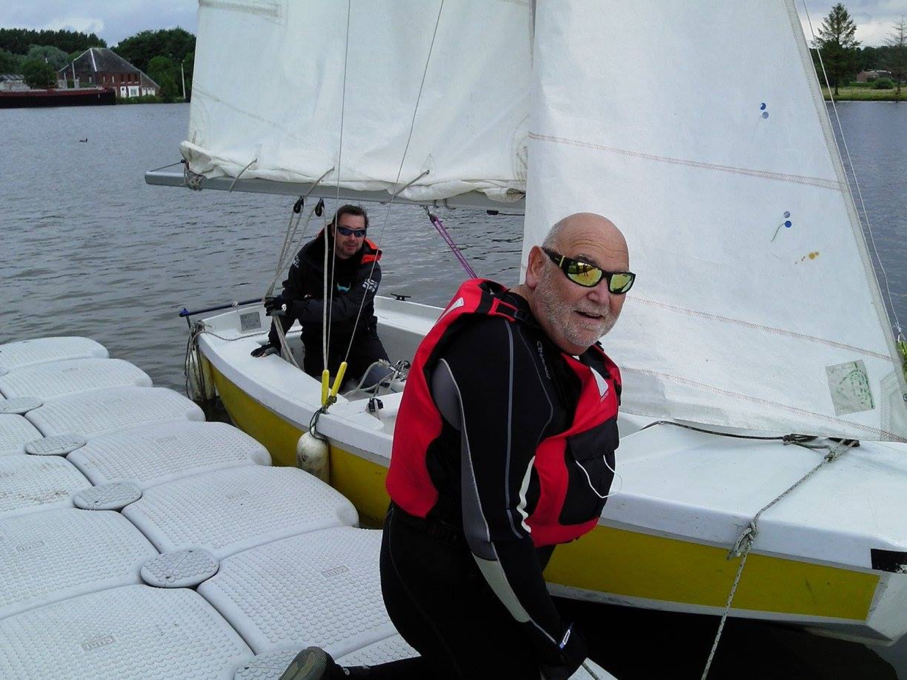
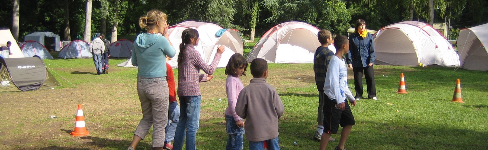
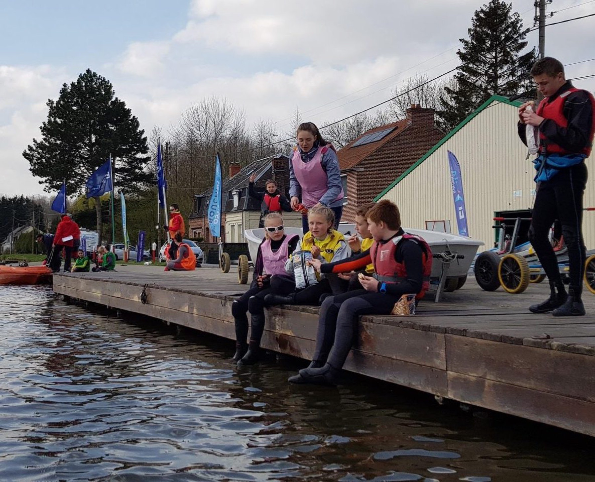

Un club de voile unique
À Bouchain, dans le Nord : un plan d'eau intérieur, calme et protégé, entre l'eau et la forêt, sur un site riche de son passé batelier. De l'enfant au senior, seul ou en groupe.
Plan schématique, ni exact ni à l'échelle
L'eau, la forêt, et le vent pour seul moteur
Dans un cadre qui allie l'eau et la forêt, le site du Bassin-Rond, riche de son passé batelier, accueille l'école de voile et de nombreuses activités nautiques.
Un plan d'eau intérieur
Calme et protégé, il permet d'essayer différents supports, solitaires ou collectifs, dans un contexte sécurisé.
La forêt tout autour
Entre deux séances, les groupes partent en balade à pied autour du site.
Un passé batelier
Les péniches amarrées rappellent l'histoire du site, au bord du canal.
On profite du milieu naturel grâce à un moyen de locomotion écologique, non bruyant et non polluant.

Neuf supports, du premier bord à la compétition
Quel que soit votre âge, un bateau vous attend au ponton. Les âges indiqués sont ceux que le club recommande.
 Optimist7 ansSoloLE bateau pour découvrir la voile en toute sécurité.
Optimist7 ansSoloLE bateau pour découvrir la voile en toute sécurité. Open Bic11 ansSoloIl faut déjà avoir du niveau pour grimper cette monture.
Open Bic11 ansSoloIl faut déjà avoir du niveau pour grimper cette monture. Planche à voile12 ansSoloLégère et maniable, elle demande de la pratique avant d'être maîtrisée.
Planche à voile12 ansSoloLégère et maniable, elle demande de la pratique avant d'être maîtrisée. Laser14 ansSoloVif, rapide et adaptable. Des sensations assurées.
Laser14 ansSoloVif, rapide et adaptable. Des sensations assurées. Catamaran Newcat 12—À deuxAdapté aux plus jeunes : plein de place, c'est plus rigolo.
Catamaran Newcat 12—À deuxAdapté aux plus jeunes : plein de place, c'est plus rigolo. RS Quba—Solo ou doubleUltra polyvalent, parfait pour débuter.
RS Quba—Solo ou doubleUltra polyvalent, parfait pour débuter.
420—À deuxConvivial, pour débuter et aller jusqu'à la compétition. Ludic—CollectifPour des balades et découvrir la voile tout en douceur.
Ludic—CollectifPour des balades et découvrir la voile tout en douceur. Hansa—BiplaceVoilier biplace, proposé aux adhérents et à la location.
Hansa—BiplaceVoilier biplace, proposé aux adhérents et à la location.

Venir en groupe
Centres aérés, comités d'entreprise, écoles, journées d'intégration : le club accueille les groupes à partir de 6 personnes.
Multi activités
Deux activités différentes par jour, dont une séance de voile. 4 ou 5 jours.
Nature
Une activité de 2 heures par jour, et du temps pour les balades à pied autour du site. La formule la plus demandée.
À la demi-journée ou à la journée
Pour une sortie ponctuelle, à partir de 6 personnes.
Dès 20 € par personne la demi-journée, encadrement et matériel compris.
Camping possible sur place. Le club prend en charge la moitié du livret de progression FFVoile remis à vos jeunes.
Voir les formules et les tarifsLes 24 heures du Bassin-Rond
Depuis le début des années 2000, l'événement attire plus de 5000 personnes sur un week-end. Reconnu d'intérêt communautaire, il se veut autant sportif que culturel, et il est ouvert à tous, adhérents ou non.
Le dernier week-end complet de juin


- Baptêmes nautiques
- Bulles aquatiques
- Jeux traditionnels
- Ateliers créatifs
- Repas et spectacle le samedi soir
Et toute l'année : la fête du sport, les Rand'eau nautic en canoë-kayak…
Une association à taille humaine
140 licenciés, trois labels fédéraux et une ambiance familiale qui fait revenir les stagiaires d'une année sur l'autre. Et des repas maison, bien sûr.
Le club accueille aussi les aînés de l'EHPAD de Bouchain pour des activités récréatives. Chaque année, il propose à ses membres de s'essayer à l'habitable en mer.
Adulte
313 €/an
- Cotisation
- 41 €
- Licence
- 72 €
- Forfait séances
- 200 €
soit 9,80 € la séance
Jeune
262 €/an
- Cotisation
- 29 €
- Licence
- 33 €
- Forfait séances
- 200 €
soit 8,20 € la séance



Nouvelles du bassin
-
1ʳᵉ Rand'eau nautic de l'année : quel succès !
18 participants encadrés par Geoffrey, notre professionnel du canoë-kayak, avec exercices techniques au programme.
Rand'eau nautic
-
Le club à l'honneur sur France Bleu Nord
Un vendredi 24 juillet, la radio a mis le Bassin-Rond à l'honneur toute la journée sur ses ondes.
Média
-
Interview sur Wéo
Pour la 20ᵉ édition des 24 heures, Guillaume était l'invité de l'émission « Sportez-vous bien ! ».
Média
Toute la vie du club au jour le jour sur Facebook et en vidéo sur YouTube.
Venir au Bassin-Rond
CDPA Bassin-Rond403 rue Henri Deshays
59111 Bouchain
Horaires de l'accueil
- Lundi au vendredi
- 9 h – 12 h et 14 h – 18 h, toute l'année
- Samedi
- 14 h – 18 h, de mars à fin juin et de septembre à fin octobre
Le club ne gère ni le port ni la pêche.